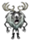
| Deerclops | |
| 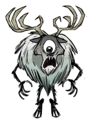 |
|
| Health | 2000 |
| Damage | 75 to player 150 to mobs |
| Attack Period | 3 |
| Attack Range | 8 |
| Walking Speed | 3 |
| Insanity aura | -400/min |
| Special Ability | AOE attack. Destroys structures and trees RoG: Freezes enemies. |
| Loot | 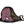×8 |
| DebugSpawn | "deerclops" |
| “ | He looks mightier than me... | ” |
| –Wolfgang | ||
Deerclops is a boss monster that is only active in Winter, unless edited by the World Generation Options Screen. It has high health and damage, and it can also destroy Structures (the same way a Hammer does) and knock down trees much like a Clockwork Rook does. Deerclops is very aggressive towards anything it encounters and can kill most other creatures. Its monstrous appearance drains Sanity when the character gets too close.
Deerclops takes four blasts from the Ice Staff to be frozen, and four Sleep Darts to put to sleep. When killed, it will drop 8 pieces of Meat and a Deerclops Eyeball, which does not spoil, and restores a high amount of Health and Hunger but drains Sanity.
Deerclops wanders the landscape during Winter, typically finding the player eventually if they're in its path. Its approach is signaled by a deep moaning and growling sound (similar to the way Hounds are signaled), which the character will eventually comment on. After that, the ground will begin to shake due to Deerclops' heavy tread. Unlike Hounds the Deerclops will not follow the player wherever they go, to spawn. Once the first moan is heard, the player can move away and with luck avoid the Deerclops altogether.
Deerclops has an attack in which it will either swipe or pound the floor at its current target. Both animations have the same effect, damaging all mobs and structures within a radius of about 2.5 berry bushes. It usually does not immediately target the player upon arrival, having an "aggro distance" toward any mob it gets close to. Deerclops first tries to target the closest structure to the player at time of being "released" (i.e. spawned); if no structure is close enough to the player, then the player is targeted instead (although this tends to be rare). Deerclops will in general not target walls, unless the object or mob Deerclops is aiming to destroy is behind a wall. Often, walls and other structures or mobs nearby may suffer collateral damage anyway, despite what Deerclops may target. This is the reason walls don't stand up well to a Deerclops.
Deerclops aims to destroy all structures and then leave. Note that the only structures counted are the ones targeted by Deerclops directly - collateral damage is not counted, meaning many more structures may be destroyed before Deerclops is "done". Naturally, if the Deerclops is aggroed by the player or other mobs, it will hang around to take care of them first, before continuing to destroy structures or leave.
It is possible to stay out of the Deerclops' way and have it pass by. However, Deerclops can easily ravage the structures in the player's camp, with Pig Houses and Rabbit Hutches being especially costly. If Deerclops collapses (dies) close enough to structures, it will damage or destroy them due to collapsing on top of them.
Once killed, Deerclops takes 3–6 days to respawn. It will despawn around about the time when summer comes (exact time depends on how fast the snow melts, as Deerclops has thresholds, unless it has been configured to "Lots" (see options below). If it is currently on the screen when it's supposed to "go away", it will simply disappear (i.e. despawn).
If the player so happens to be in the Caves in Winter and they come out, it is possible for Deerclops to be waiting for them at the entrance so caution should be taken.
Deerclops can be kited, a process by which the character dodges its attack, strikes back once, and then dodges out of range again multiple times. You must time your attacks with the Deerclops animation, and strike it ONLY ONCE in an opening, as its long and wide ranged melee attack is hard to dodge even with a mighty Wolfgang's speed. Its high health means this will take time, however, and the character's Sanity will drop quickly. Armor should be worn when attempting this as Deerclops can kill most characters in two strikes. Two or three Log suits and Football helmets should be enough to mitigate some damage, and around 10 pieces of Jerky should be enough to heal from some damage. A Walking cane and timed clicking can increase your ability to dodge his attacks in between your blows, and give you a speed boost to run away if you need to heal or escape. Be warned, as the Deerclops attacks will (as of Reign of Giants) freeze the regular player solid (as if they were hit by blasts from an ice staff) in two hits, so intentionally tanking attacks is not recommended.
Deerclops doesn't sleep during the night but can be put to sleep by a Pan Flute or Sleep Darts. Fire Darts or the Fire Staff are also effective, although it will take several hits to kill it, and this may result in the loot it drops turning to Ash, in which case you will get 8 cooked meat but no Deerclops Eyeball. Deerclops can also be frozen and then attacked from behind.
Deerclops can be easily killed by using the Snurtle Shell Armor, should the player have one. Before it strikes, hide in the shell, then unhide and strike between its attacks. With Wolfgang on a full belly (300 hunger, 300 health and dealing 2x damage), the player can simply tank the Deerclops with a Tentacle Spike or Ham Bat without any sort of armor and will be able to kill it and survive with some health left.
A quick method, if the player happens to have a lot of Tooth Traps, is to lead Deerclops to an open area covered in the traps. As with other aggressive creatures, it will walk towards the player without avoiding the traps. It'll take 34 sprung traps to kill Deerclops, but the player can kite it to speed up the process.
Alternatively, Deerclops can be compelled to fight other creatures. It does a wide-area cleave-style attack that can damage several surrounding targets at the same time. As an example, if the Deerclops were lured to a group of Beefalo, it will hit several at the same time and cause them to attack. It's advised to have an Ice Staff in this situation, as the Deerclops can make quick work of a small to medium Beefalo herd. Using the staff on it as it prepares to strike, will stun it and cancel its attack, protecting the Beefalo in the process. Treeguards will also fight Deerclops this way and are very effective. Walrus Camp can also be used: MacTusk can dodge Deerclops nicely and eventually kill it, and it's an easy way to get Walrus-related items if any of the walruses die.
Another way to kill the Deerclops, involves having a neutral Treeguard in your backyard. Guide the Deerclops into some trees to destroy them. Let the Treeguard do your bidding. The large Treeguard will kill Deerclops with health to spare.
However, the quickest method of killing Deerclops requires Gunpowder and a Torch. Rotten eggs can be produced manually by leaving Eggs on the ground, while it's possible to find a bunch of them lying around from Pengulls, and Charcoal is easily produced by burning trees. Only the Nitre may need some scavenging around. Gunpowder deals about 200 damage, so 10 of these would instantly kill Deerclops. Place the gunpowder, 9 in a stack, as close as possible to Deerclops (it's recommended to freeze or put it to sleep to hold it still). Then light the gunpowder with a torch and run. For Deerclops' remaining health, hit it with non-fire weapons. Only 9 stacks of gunpowder should be used, since the player presumably wants fresh loot.
Alternatively, Deerclops can easily be lost by moving a good distance away, or jumping into a Worm Hole. After losing interest in you it will find something else to smash. A Bush Hat will keep the character hidden if necessary.
Below is the number of hits it takes with each weapon to kill Deerclops when playing with characters with a default damage modifier. The Weather Pain is not included due to the random nature of its projectile.
| Weapon | 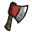 | 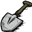 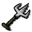 | 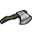 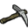 | 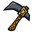 | 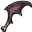 | 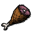 | 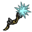 | 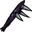 | 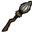 | 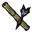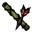 | 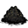 | 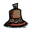 | ||||
|---|---|---|---|---|---|---|---|---|---|---|---|---|---|---|---|---|
| No. of hits for 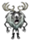 | 471 | 148 | 112 | 74 | 66 | 59 | 48 | 34-68 | 47 or 28 | 40 | 39 | 34 | 30 | 20 | 10 | 2 |
Deerclops attack frequencies may be adjusted in the World Generation Options Screen as follows:
| Option | Number of Attacks per Season | Attacks During Summer? |
|---|---|---|
| None | 0 | No |
| Default | 1 | No |
| Less | 1 | No |
| More | 2 | No |
| Lots | 3 | Yes |
As one can see from the table, "default" and "less" is actually the same setting. The "More" setting adds up to 2 attacks per season, while the "Lots" setting ups that to 3 attacks per season, which includes both winter and summer. Note that even on the final setting, Deerclops will still despawn once summer starts (but not when winter starts) - meaning any Deerclops spawned during summer won't actually despawn until the next summer begins on that setting!
Additionally, the spawning of Deerclops appears to be tied to the change of snow cover, which regulates when a new Deerclops may spawn. This has the effect that even if Deerclops is set to 1 (i.e. the default), and then killed near the end of winter (when the snow cover may change, but still be above the threshold required for a winter Deerclops), it is entirely possible for another Deerclops to spawn very soon afterwards.
Due to the way snow cover change regulates the Deerclops spawning, the actual number of attacks one will experience may vary wildly from that in the "setting". That is, at best, all one can know for sure is that setting it higher will probably result in more attacks on average, with the possibility of a summer attack on the final setting.
When set to the "Default" or "Less" Deerclops setting, It is possible to survive through multiple winter without seeing or hearing Deerclops. In theory, setting Deerclops to "More" should guarantee that Deerclops attacks at least once per winter.
In the Reign of Giants DLC, Deerclops gains the ability to freeze others, including the player. It takes two hits from the Deerclops to freeze something, the first hit will turn the NPC/player blue and the next one will freeze it. This makes certain tactics, involving the use of neutral mobs such as Pigs or Bunnymen, ineffective.
")
")
| Mobs | |
| Hostile Monsters | Batilisk • Cave Spider • Clockwork Bishop • Clockwork Rook • Clockwork Knight • Dangling Depth Dweller • Depths Worm • Frog • Guardian Pig • Ghost • Shadow Creature • Hound (Red Hound • Blue Hound) • Killer Bee • Lureplant • MacTusk • Merm • Mosquito • Spider • Spider Warrior • Spitter • Tallbird • Tentacle (Big Tentacle • Baby Tentacle) • Wee MacTusk • (Birchnut Treeguard • Varg |
| Boss Monsters | Ancient Guardian • Deerclops • Spider Queen • Treeguard • (Bearger • Dragonfly • Goose ) |
| Neutral Animals | Bee • Beefalo • Bunnyman (Beardlord) • Koalefant • Krampus • Pengull • Pig (Werepig) • Rock Lobster • Snurtle • Slurtle • Smallish Tallbird • Splumonkey • (Buzzard • Catcoon • Volt Goat |
| Passive Animals | Baby Beefalo • Butterfly • Chester • Crow • Gobbler • Mandrake • Rabbit (Beardling) • Redbird • Smallbird • Snowbird • (Glommer • Moleworm |
| Other | Abigail • Charlie • Maxwell • Pig King |

{kind=link}
{kind=link}
{kind=link}
{kind=link}
{kind=link}
{kind=link}
{kind=link}
{kind=link}
{kind=link}
{kind=link}
{kind=link}
{kind=link}